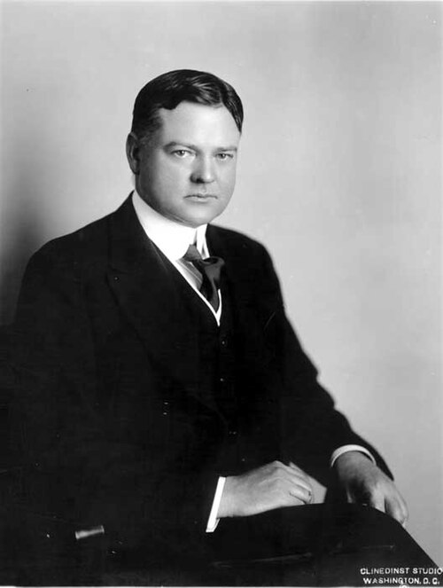
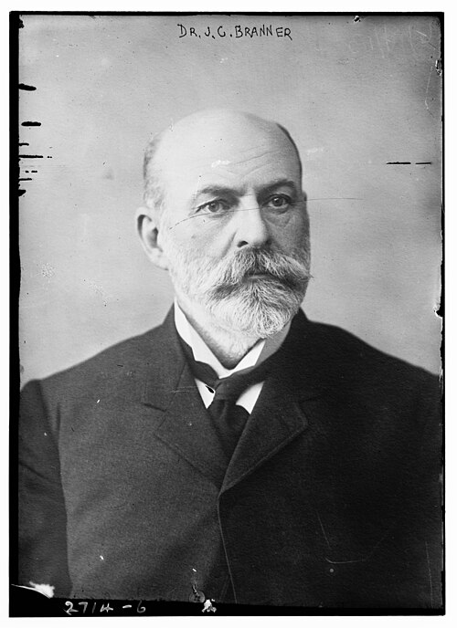
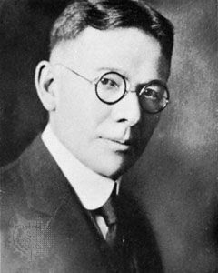

Surname
Stanford
People
- Charles StanfordBrother of Leland Stanford; New York merchant, newspaper publisher and politician
- Elizabeth Phillips StanfordMother of Leland Stanford
 Jane Lathrop StanfordWidow who kept the university funded after 1893
Jane Lathrop StanfordWidow who kept the university funded after 1893- Josiah StanfordFather of Leland Stanford
 Leland StanfordGovernor; one of the Associates; founder of the university
Leland StanfordGovernor; one of the Associates; founder of the university- Leland Stanford Jr.The Stanfords' only child
- Thomas Welton StanfordBrother of Leland Stanford; Australian businessman, spiritualist and donor to Stanford University
Origin of the name
Not recorded. The Cardinal notes do not say where the name Stanford comes from, so none is claimed.
In Dawn: this is where a cited origin note for the surname would attach, next to the family trees that carry the name.
Maiden names the notes state
- Jane Lathrop Stanford · birth surname Lathrop
Source
site/corpus/rewrite/GLOSSARY.mdJane Lathrop Stanford is "Jane Stanford," then "Jane."
Places
| Place | Events | People |
|---|---|---|
| Stanford, CA | 17 | 15 |
| Palo Alto, CA | 12 | 12 |
| Washington, DC | 12 | 10 |
| New York City | 6 | 6 |
| Menlo Park, CA | 4 | 7 |
| Monterey, CA | 4 | 5 |
| Mountain View, CA | 3 | 6 |
| Page Mill Road, Palo Alto, CA | 3 | 5 |
Busiest places
Recorded events per decade
Place
Stanford, CA
People recorded here

Herbert Hoover
John Casper Branner- Lou Henry

Lewis Terman- John Steinbeck
- Ephraim Adams
 David Starr Jordan
David Starr Jordan- Russell Varian
- Sigurd Varian
- Phil Knight
- Peter Thiel
- William Shockley
- Elon Musk
- David Packard
- Marc Tessier-Lavigne
Events
- 1891Enters Stanford with the pioneer class (university opens Oct 1, 1891); studies geology and mining, finds a mentor in Branner Verified
Herbert Hoover, John Casper Branner
- 1894–1898Enters Stanford (1894); takes a degree in geology (1898) Verified
Lou Henry
- 1894–1895Hoover meets Lou Henry in Branner's geology lab Verified
Herbert Hoover, Lou Henry, John Casper Branner
- 1910Joins the Stanford faculty (brought by Ellwood Cubberley) Verified
Lewis Terman
- 1912Joins the Stanford board of trustees Verified
Herbert Hoover
- 1919–1925Attends Stanford intermittently; never earns a degree Verified
John Steinbeck